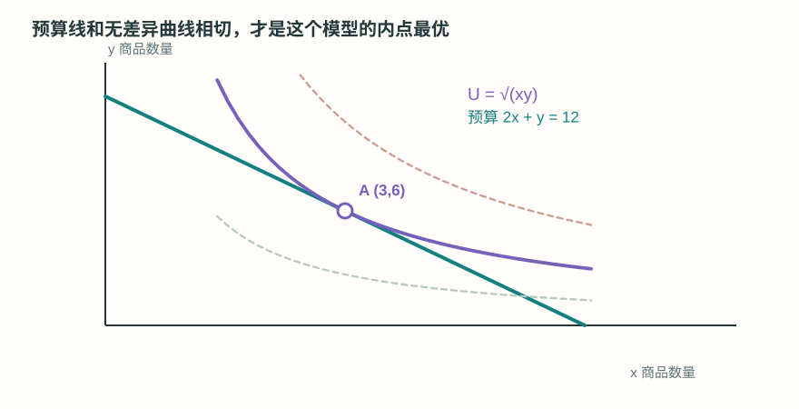
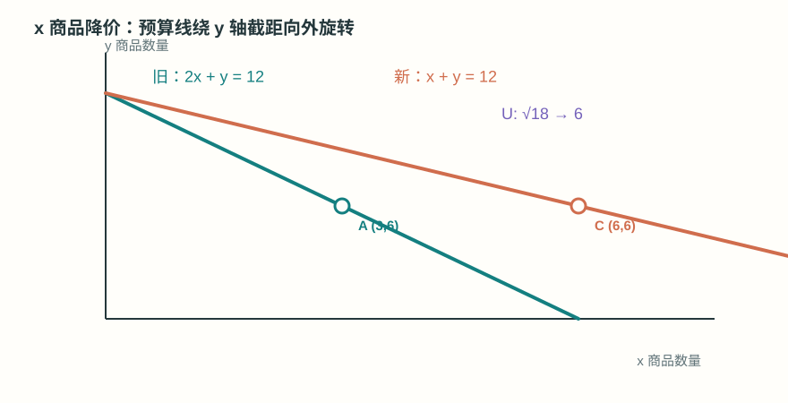

CHAPTER 09 · MICROECONOMICS
消费者选择（下）：无差异曲线
把偏好地图与预算集合叠在一起，理解商品交换、边际替代率和切点。
把偏好画成地图：无差异曲线的定义
一份餐食可以包含不同数量的主食 X 与饮品 Y。人们可能认为“3份 X 配6份 Y”与另一种组合一样好——不是因为两份组合的商品数量相等，而是因为偏好对它们的评价相同。无差异曲线是产生同一效用水平的所有消费束组成的轨迹。
沿用上一章的效用表示 U(x,y)=√(xy)，效用为同一个常数 u 的消费束必须满足 xy=u²。于是 U=√18 对应 xy=18；例如 (3,6)、(2,9)、(4.5,4) 都位于这条曲线上，主观效用相同，但它们的支出不一定相同。仅画偏好而没有预算，不能确定消费者最终买什么。
效用曲线是排序工具，不是可沿曲线从一个商品“瞬间换成”另一个商品的市场交易规则；图形展示消费者愿意做的主观权衡。
四个基本几何事实，各自依赖假设
若偏好完整、传递，并具有商品越多越好与严格凸偏好的特点，通常有四个性质：无差异曲线向右下倾斜；更东北方向的曲线效用更高；同一人偏好地图中的曲线不能交叉；平滑凸偏好下，曲线向右移动会逐渐变平。这些性质反映具体假设，而不是所有偏好自动满足。
如果两种商品是完全替代品，无差异曲线可以是直线，最优常在预算角点；如果是完全互补品，无差异曲线可以是L形，在折角处最优。商品存在厌恶或饱和时，向右下倾斜等直觉也需要重新检验。
预算线为什么是一条直线？
设消费者预算 I=12，商品 X 价格 Px=2，商品 Y 价格 Py=1。买得起的组合满足 2x+y≤12；把全部预算用完的边界为 2x+y=12。横轴截距 x=6，纵轴截距 y=12，预算线斜率 dy/dx=−Px/Py=−2。沿预算线多获得1单位 X，必须放弃2单位 Y。

| 消费束 | 效用 √xy | 支出 2x+y | 可行？ |
|---|---|---|---|
| (2,9) | √18≈4.243 | 13 | 不可行 |
| (3,6) | √18≈4.243 | 12 | 可行，且最优 |
| (4.5,4) | √18≈4.243 | 13 | 不可行 |
| (2,8) | 4 | 12 | 可行但次优 |
表格说明同一条无差异曲线上的商品组合未必都买得起；只有将偏好曲线和预算集合叠在一起，才谈得上在可行范围内达到最高效用。
边际替代率：消费者愿意放弃多少 Y 换一单位 X
在一条无差异曲线上多获得微小数量的 X，同时减少 Y，才能保持效用不变。边际替代率 MRSxy 通常定义为无差异曲线斜率的负值（正数），即 MRSxy=MUx/MUy。对 U=√xy，求偏导可得 MUx=(1/2)√(y/x)、MUy=(1/2)√(x/y)，所以 MRSxy=y/x。
在 x=3、y=6 时，MRS=2：这个人对边际多获得1单位 X，在该点附近愿意放弃约2单位 Y，而市场预算也恰好要求放弃2单位 Y，因而不存在微小预算内调整可以改善效用。
“边际替代率递减”并不是单独来自边际效用递减的必然结论，它与偏好的凸性有关。对于完全替代品的线性偏好，边际替代率可能保持不变；对不平滑偏好，切线可能不存在。
最优消费束：切点是条件，不是万能口诀
在连续可微、局部非饱和、严格凸偏好且两种商品都正消费的情形下，最优消费束位于预算线上，并满足 MRSxy=Px/Py。此例是 y/x=2 与 2x+y=12 联立求解，得到 x*=3、y*=6，效用 U*=√18。
然而对于L形无差异曲线，最优可能在折角而非光滑切点；存在完全替代品、某一商品价格太高或角点选择时，不能直接套用导数相等。正确做法是先检查偏好和可行集合，再比较所有可疑最优点。
收入增加会使预算线平行外移（价格不变），而某一商品降价通常会使预算线绕另一商品的截距旋转。这是下一节图形的重点。

交互验证：收入变化与预算最优
收入改变，预算线如何平移？
固定 Px=2、Py=1、U=√xy；让收入从8元增加到20元。在这组偏好下，x*=I/4、y*=I/2。
I=12，x*=3，y*=6，效用√18≈4.243。
这里两种商品都是正常品，收入增加使两个消费数量同时增加；其他偏好不一定这样。
预算从12增至16元、价格不变时，Cobb–Douglas消费者的最优束是什么？
查看答案
x*=16/(2×2)=4、y*=16/(2×1)=8，预算花费2×4+8=16；U=√32≈5.657。预算线平行外移，斜率仍为−2。
如果变化的不是收入，而是某个商品自身价格，消费组合为何改变？第十章将这种总效果拆解为替代效应与收入效应。
来源与技术假设
本章图形采用 U=√xy、价格和收入固定的假设；与真实消费者的偏好与支付行为不能直接等同。相关概念参考：